Análise multivariada da resposta subjetiva ao tratamento
Source:vignettes/subjective_response.Rmd
subjective_response.Rmd
data(dados, package = "TelePsi")Qual foi a percepção dos sujeitos em relação a resposta de tratamento?
dados_com_resposta <- dados |>
dplyr::mutate(
resposta = as.factor(
dplyr::case_when(
g_perc %in% c("1 Muito pior", "2 Moderadamente pior",
"3 Levemente pior", "4 Igual") ~ "Igual ou pior",
g_perc %in% c("5 Levemente melhor", "6 Moderadamente melhor",
"7 Muito melhor") ~ "Melhor",
TRUE ~ NA_character_
)
)
) |>
dplyr::filter(!is.na(resposta),
suicidio == "Sem risco")
dados_com_resposta |>
dplyr::count(resposta) |>
ggplot2::ggplot(ggplot2::aes(y = n, x = resposta)) +
ggplot2::geom_col(fill = "orange") +
ggplot2::geom_text(ggplot2::aes(label = n), vjust = -0.5, size = 7) +
ggplot2::theme_minimal(base_size = 22) +
ggplot2::labs(x = "Resposta ao tratamento",
y = "# de participantes")
Limpeza e manipulação de dados
dados_incluidos <- dados_com_resposta |>
dplyr::select(resposta,
idade,
sexo,
prof_saude = essenciais,
g_vid,
dplyr::matches("^b_d[1-8]$"),
dplyr::matches("^b_a[1-8]$"),
dplyr::matches("^b_i[1-5]$"),
dplyr::matches("^b_cov9[a-z][a-b]*$"),
dplyr::matches("^b_son[1-8]$"),
dplyr::matches("^b_cov6[a-d]$"),
b_trat1,
b_med1,
b_psic1,
g_faltas
) |>
dplyr::mutate(
sexo = as.factor(
dplyr::case_when(
sexo == "1 Feminino" ~ "Feminino",
sexo == "2 Masculino" ~ "Masculino",
TRUE ~ NA_character_
)
),
prof_saude = as.factor(
dplyr::case_when(
prof_saude == "1 Profissional da Saúde" ~ "Sim",
prof_saude %in% c(
"2 Outro Profissional de Serviços Essenciais",
"3 Professor(a)",
"4 Outra categoria profissional"
) ~ "Não",
TRUE ~ NA_character_
)
),
g_vid = readr::parse_number(g_vid),
g_vid = dplyr::if_else(g_vid > 16, NA_real_, g_vid)
)Manipulação de fatores
dados_limpos <- dados_incluidos |>
dplyr::mutate(
dplyr::across(dplyr::matches("^b_cov9[a-z][a-b]*$"),
\(x) as.factor(
dplyr::case_when(
x == 1 ~ "Sim",
x == 0 ~ "Não",
TRUE ~ NA_character_
)
)),
dplyr::across(c(b_trat1, b_med1, b_psic1),
\(x) as.factor(
dplyr::case_when(
x == "1 Sim" ~ "Sim",
x == "2 Não" ~ "Não",
TRUE ~ NA_character_
)
)),
resposta = relevel(resposta, ref = "Igual ou pior")
) |>
dplyr::glimpse()#> Rows: 709
#> Columns: 67
#> $ resposta <fct> Melhor, Melhor, Melhor, Melhor, Melhor, Melhor, Melhor, Mel…
#> $ idade <dbl> 33, 58, NA, 40, 33, 48, NA, 30, 65, 55, 26, 26, 38, 27, 52,…
#> $ sexo <fct> Feminino, Masculino, Feminino, Feminino, Feminino, Feminino…
#> $ prof_saude <fct> Sim, Sim, Sim, Sim, Sim, Não, Sim, Sim, Sim, Sim, Não, Sim,…
#> $ g_vid <dbl> 5, 6, 8, 11, 7, 8, 8, 5, 7, 3, 5, 4, 5, 8, 8, 6, 9, 9, 4, 9…
#> $ b_d1 <dbl> 1, 1, 3, 1, 2, 2, 1, 1, 3, 2, 1, 2, 3, 3, 4, 1, 4, 3, 1, 2,…
#> $ b_d2 <dbl> 1, 1, 2, 3, 4, 2, 1, 2, 4, 3, 3, 2, 3, 2, 2, 1, 3, 3, 1, 2,…
#> $ b_d3 <dbl> 3, 3, 5, 3, 4, 3, 2, 3, 4, 3, 3, 2, 3, 4, 4, 4, 4, 3, 4, 3,…
#> $ b_d4 <dbl> 1, 1, 3, 3, 3, 2, 2, 1, 4, 3, 3, 1, 3, 3, 3, 3, 4, 1, 3, 2,…
#> $ b_d5 <dbl> 1, 3, 2, 3, 3, 2, 2, 1, 2, 3, 1, 2, 3, 2, 2, 2, 3, 1, 1, 1,…
#> $ b_d6 <dbl> 1, 1, 4, 3, 3, 1, 2, 1, 4, 2, 3, 1, 3, 4, 5, 3, 5, 3, 3, 3,…
#> $ b_d7 <dbl> 2, 1, 3, 3, 3, 1, 2, 1, 4, 2, 3, 1, 3, 4, 3, 2, 5, 1, 3, 1,…
#> $ b_d8 <dbl> 1, 1, 4, 2, 3, 2, 2, 2, 3, 2, 3, 1, 3, 3, 3, 2, 3, 1, 2, 2,…
#> $ b_a1 <dbl> 4, 5, 4, 3, 4, 3, 4, 3, 4, 3, 3, 2, 3, 4, 4, 4, 4, 4, 5, 3,…
#> $ b_a2 <dbl> 4, 3, 5, 4, 5, 2, 5, 3, 4, 4, 3, 3, 3, 5, 2, 3, 4, 4, 4, 3,…
#> $ b_a3 <dbl> 4, 3, 5, 4, 4, 2, 4, 3, 3, 3, 3, 4, 3, 4, 2, 3, 4, 4, 4, 3,…
#> $ b_a4 <dbl> 4, 3, 5, 3, 4, 3, 4, 2, 3, 4, 4, 2, 3, 4, 4, 4, 5, 5, 5, 4,…
#> $ b_a5 <dbl> 4, 1, 3, 4, 3, 3, 5, 4, 3, 5, 3, 4, 3, 5, 4, 3, 3, 4, 3, 4,…
#> $ b_a6 <dbl> 4, 3, 5, 4, 5, 3, 5, 3, 4, 5, 5, 4, 3, 5, 4, 3, 4, 5, 4, 4,…
#> $ b_a7 <dbl> 4, 3, 5, 4, 5, 3, 5, 4, 4, 5, 5, 4, 3, 5, 4, 3, 5, 5, 4, 4,…
#> $ b_a8 <dbl> 4, 3, 5, 4, 4, 3, 5, 3, 4, 3, 4, 2, 3, 4, 4, 3, 4, 5, 5, 4,…
#> $ b_i1 <dbl> 3, 3, 5, 4, 3, 2, 5, 3, 4, 3, 5, 4, 3, 5, 3, 2, 3, 3, 2, 4,…
#> $ b_i2 <dbl> 1, 3, 2, 3, 3, 1, 5, 2, 2, 5, 4, 2, 3, 4, 2, 2, 3, 1, 1, 2,…
#> $ b_i3 <dbl> 1, 1, 3, 3, 3, 3, 4, 2, 2, 5, 4, 4, 3, 5, 3, 2, 3, 3, 4, 2,…
#> $ b_i4 <dbl> 1, 1, 2, 4, 2, 2, 5, 4, 2, 2, 4, 2, 3, 5, 3, 3, 2, 1, 1, 3,…
#> $ b_i5 <dbl> 1, 3, 3, 3, 3, 2, 4, 3, 2, 3, 4, 2, 3, 4, 3, 3, 3, 3, 1, 3,…
#> $ b_cov9a <fct> Não, Sim, Sim, Não, Não, Sim, Não, Sim, Não, Não, Sim, Não,…
#> $ b_cov9b <fct> Não, Não, Sim, Não, Não, Não, Sim, Não, Não, Sim, Não, Não,…
#> $ b_cov9c <fct> Sim, Não, Não, Não, Sim, Sim, Sim, Sim, Sim, Sim, Sim, Sim,…
#> $ b_cov9d <fct> Não, Não, Não, Não, Não, Não, Não, Sim, Não, Não, Não, Não,…
#> $ b_cov9e <fct> Não, Não, Não, Não, Não, Não, Não, Não, Não, Não, Não, Não,…
#> $ b_cov9f <fct> Não, Não, Não, Não, Não, Não, Não, Não, Sim, Sim, Não, Não,…
#> $ b_cov9g <fct> Não, Não, Não, Não, Não, Não, Não, Não, Não, Não, Não, Não,…
#> $ b_cov9h <fct> Não, Sim, Sim, Não, Não, Não, Não, Não, Sim, Não, Não, Não,…
#> $ b_cov9i <fct> Não, Não, Não, Não, Não, Sim, Não, Não, Não, Não, Não, Não,…
#> $ b_cov9j <fct> Não, Não, Não, Não, Não, Não, Não, Não, Não, Não, Não, Não,…
#> $ b_cov9k <fct> Não, Não, Não, Não, Não, Não, Não, Não, Não, Não, Não, Não,…
#> $ b_cov9l <fct> Não, Não, Não, Não, Não, Não, Não, Não, Não, Não, Não, Não,…
#> $ b_cov9m <fct> Não, Não, Não, Não, Não, Não, Não, Não, Não, Não, Não, Não,…
#> $ b_cov9n <fct> Não, Sim, Não, Não, Não, Sim, Sim, Não, Não, Sim, Não, Sim,…
#> $ b_cov9p <fct> Não, Não, Não, Sim, Sim, Não, Não, Não, Não, Não, Sim, Sim,…
#> $ b_cov9q <fct> Não, Sim, Não, Sim, Não, Não, Não, Não, Não, Não, Sim, Não,…
#> $ b_cov9r <fct> Não, Não, Não, Não, Não, Não, Não, Não, Não, Não, Não, Não,…
#> $ b_cov9s <fct> Não, Não, Não, Não, Não, Não, Não, Não, Não, Não, Não, Não,…
#> $ b_cov9t <fct> Não, Não, Não, Não, Não, Não, Não, Não, Não, Não, Não, Não,…
#> $ b_cov9u <fct> Não, Não, Não, Não, Não, Não, Não, Não, Não, Não, Não, Não,…
#> $ b_cov9v <fct> Não, Não, Não, Não, Não, Não, Não, Não, Não, Sim, Não, Não,…
#> $ b_cov9x <fct> Não, Não, Não, Sim, Não, Sim, Não, Não, Não, Sim, Não, Não,…
#> $ b_cov9z <fct> Não, Não, Não, Sim, Não, Não, Não, Não, Não, Sim, Não, Não,…
#> $ b_cov9aa <fct> Não, Sim, Não, Sim, Não, Não, Não, Sim, Não, Sim, Não, Não,…
#> $ b_cov9bb <fct> Não, Não, Sim, Sim, Sim, Sim, Sim, Sim, Não, Sim, Sim, Não,…
#> $ b_son1 <dbl> 2, 2, 4, 5, 3, 4, 3, 3, 3, 4, 4, 2, 4, 3, 5, 3, 5, 3, 3, 3,…
#> $ b_son2 <dbl> 2, 2, 3, 4, 3, 3, 3, 3, 3, 3, 3, 3, 4, 4, 4, 4, 4, 4, 3, 3,…
#> $ b_son3 <dbl> 3, 3, 4, 4, 3, 3, 4, 4, 3, 3, 4, 3, 3, 3, 4, 3, 4, 4, 3, 3,…
#> $ b_son4 <dbl> 3, 3, 5, 3, 3, 3, 3, 3, 3, 4, 3, 3, 3, 2, 4, 3, 4, 4, 3, 2,…
#> $ b_son5 <dbl> 3, 3, 3, 3, 3, 3, 4, 3, 3, 4, 3, 2, 3, 5, 5, 3, 3, 4, 2, 3,…
#> $ b_son6 <dbl> 3, 3, 3, 3, 3, 3, 4, 3, 2, 5, 3, 2, 3, 2, 3, 3, 4, 1, 2, 2,…
#> $ b_son7 <dbl> 3, 4, 3, 2, 3, 3, 5, 3, 2, 3, 3, 2, 5, 2, 3, 3, 3, 3, 2, 2,…
#> $ b_son8 <dbl> 3, 2, 3, 3, 3, 3, 4, 3, 2, 5, 4, 2, 4, 5, 4, 3, 4, 4, 2, 3,…
#> $ b_cov6a <dbl> 3, 2, 2, 2, 4, 3, 4, 2, 3, 4, 2, 4, 3, 4, 4, 2, 3, 3, 4, 3,…
#> $ b_cov6b <dbl> 4, 4, 2, 3, 4, 3, 4, 3, 4, 4, 2, 3, 3, 3, 4, 3, 4, 2, 4, 3,…
#> $ b_cov6c <dbl> 3, 3, 1, 0, 4, 3, 4, 3, 2, 4, 2, 1, 1, 3, 4, 2, 3, 3, 4, 3,…
#> $ b_cov6d <dbl> 3, 3, 4, 3, 4, 2, 4, 2, 3, 4, 2, 2, 1, 4, 4, 4, 3, 3, 4, 3,…
#> $ b_trat1 <fct> Não, Sim, Não, Não, Não, Não, Não, Sim, Não, Não, Não, Não,…
#> $ b_med1 <fct> Não, Sim, Não, Não, Não, Sim, Não, Sim, Sim, Sim, Não, Não,…
#> $ b_psic1 <fct> Não, Não, Não, Não, Não, Não, Não, Não, Não, Sim, Não, Não,…
#> $ g_faltas <dbl> 0, 7, 0, 0, 0, 0, 0, 0, 1, 0, 1, 0, 1, 14, 0, 1, 4, 0, 14, …Análises bivariadas
library(magrittr, include.only = "%>%")
num_biv <- dados_limpos |>
dplyr::select(resposta, where(is.numeric)) |>
tidyr::pivot_longer(names_to = "variable", values_to = "value", -resposta) |>
dplyr::group_by(variable) %>%
dplyr::do(t.test(.$value ~ .$resposta) |>
broom::tidy()) |>
dplyr::ungroup() |>
dplyr::select(-method, -alternative)
num_biv |>
knitr::kable(
digits = 3
)| variable | estimate | estimate1 | estimate2 | statistic | p.value | parameter | conf.low | conf.high |
|---|---|---|---|---|---|---|---|---|
| b_a1 | 0.003 | 3.801 | 3.799 | 0.034 | 0.973 | 240.399 | -0.157 | 0.162 |
| b_a2 | -0.047 | 3.417 | 3.464 | -0.536 | 0.592 | 254.400 | -0.219 | 0.125 |
| b_a3 | 0.014 | 3.503 | 3.489 | 0.159 | 0.874 | 253.048 | -0.161 | 0.189 |
| b_a4 | 0.049 | 3.709 | 3.660 | 0.615 | 0.539 | 253.265 | -0.107 | 0.204 |
| b_a5 | 0.074 | 3.563 | 3.489 | 0.818 | 0.414 | 241.857 | -0.104 | 0.251 |
| b_a6 | 0.057 | 3.762 | 3.705 | 0.628 | 0.531 | 247.770 | -0.121 | 0.234 |
| b_a7 | 0.117 | 4.060 | 3.942 | 1.468 | 0.143 | 249.450 | -0.040 | 0.274 |
| b_a8 | 0.123 | 3.934 | 3.811 | 1.645 | 0.101 | 264.102 | -0.024 | 0.269 |
| b_cov6a | -0.080 | 2.305 | 2.385 | -0.697 | 0.486 | 223.443 | -0.307 | 0.146 |
| b_cov6b | 0.113 | 2.921 | 2.808 | 1.187 | 0.236 | 238.501 | -0.074 | 0.300 |
| b_cov6c | 0.025 | 2.331 | 2.306 | 0.231 | 0.817 | 240.403 | -0.191 | 0.242 |
| b_cov6d | -0.035 | 2.742 | 2.777 | -0.355 | 0.723 | 240.240 | -0.231 | 0.161 |
| b_d1 | 0.233 | 2.821 | 2.588 | 2.502 | 0.013 | 250.639 | 0.050 | 0.417 |
| b_d2 | 0.190 | 3.007 | 2.817 | 2.140 | 0.033 | 255.582 | 0.015 | 0.365 |
| b_d3 | 0.128 | 3.417 | 3.290 | 1.604 | 0.110 | 246.092 | -0.029 | 0.284 |
| b_d4 | 0.077 | 2.960 | 2.883 | 0.817 | 0.415 | 252.206 | -0.109 | 0.263 |
| b_d5 | 0.182 | 2.689 | 2.507 | 1.758 | 0.080 | 246.034 | -0.022 | 0.385 |
| b_d6 | 0.145 | 3.013 | 2.869 | 1.484 | 0.139 | 225.195 | -0.047 | 0.336 |
| b_d7 | 0.126 | 2.960 | 2.835 | 1.179 | 0.240 | 235.457 | -0.084 | 0.336 |
| b_d8 | 0.180 | 2.788 | 2.608 | 1.919 | 0.056 | 242.983 | -0.005 | 0.365 |
| b_i1 | 0.063 | 3.517 | 3.453 | 0.685 | 0.494 | 250.550 | -0.119 | 0.245 |
| b_i2 | 0.150 | 3.033 | 2.883 | 1.633 | 0.104 | 248.380 | -0.031 | 0.331 |
| b_i3 | 0.037 | 3.199 | 3.162 | 0.367 | 0.714 | 240.137 | -0.161 | 0.234 |
| b_i4 | 0.225 | 3.225 | 3.000 | 2.280 | 0.023 | 246.270 | 0.031 | 0.420 |
| b_i5 | 0.053 | 3.384 | 3.331 | 0.719 | 0.473 | 265.094 | -0.092 | 0.199 |
| b_son1 | 0.018 | 3.483 | 3.466 | 0.178 | 0.859 | 233.861 | -0.177 | 0.212 |
| b_son2 | 0.051 | 3.364 | 3.313 | 0.614 | 0.540 | 235.638 | -0.113 | 0.216 |
| b_son3 | 0.071 | 3.464 | 3.392 | 0.797 | 0.426 | 237.345 | -0.105 | 0.248 |
| b_son4 | 0.083 | 3.205 | 3.122 | 0.808 | 0.420 | 240.357 | -0.119 | 0.285 |
| b_son5 | 0.098 | 3.238 | 3.140 | 1.025 | 0.307 | 237.556 | -0.091 | 0.287 |
| b_son6 | 0.027 | 2.960 | 2.933 | 0.244 | 0.807 | 231.947 | -0.190 | 0.243 |
| b_son7 | -0.016 | 2.974 | 2.989 | -0.139 | 0.890 | 232.743 | -0.238 | 0.207 |
| b_son8 | 0.239 | 3.497 | 3.257 | 2.827 | 0.005 | 252.032 | 0.073 | 0.406 |
| g_faltas | -0.062 | 1.947 | 2.009 | -0.134 | 0.894 | 286.154 | -0.975 | 0.851 |
| g_vid | -1.733 | 4.308 | 6.041 | -7.613 | 0.000 | 191.891 | -2.182 | -1.284 |
| idade | -0.318 | 37.434 | 37.753 | -0.330 | 0.742 | 221.202 | -2.218 | 1.581 |
cat_biv <- dados_limpos |>
purrr::keep(is.factor) |>
tidyr::pivot_longer(names_to = "variable", values_to = "value", -resposta) |>
dplyr::group_by(variable) %>%
dplyr::do(chisq.test(.$resposta, .$value, simulate.p.value = TRUE) |>
broom::tidy()) |>
dplyr::select(-c(parameter, method)) |>
dplyr::ungroup()
knitr::kable(cat_biv,
digits = 3,
col.names = c("Variável",
"Estatística",
"p-valor"))| Variável | Estatística | p-valor |
|---|---|---|
| b_cov9a | 0.353 | 0.593 |
| b_cov9aa | 0.307 | 0.655 |
| b_cov9b | 1.403 | 0.276 |
| b_cov9bb | 0.000 | 1.000 |
| b_cov9c | 0.034 | 0.931 |
| b_cov9d | 0.429 | 0.584 |
| b_cov9e | 0.186 | 0.702 |
| b_cov9f | 0.035 | 0.913 |
| b_cov9g | 0.132 | 0.813 |
| b_cov9h | 0.333 | 0.584 |
| b_cov9i | 0.389 | 0.591 |
| b_cov9j | 0.428 | 0.519 |
| b_cov9k | 0.203 | 0.672 |
| b_cov9l | 2.483 | 0.137 |
| b_cov9m | 1.596 | 0.250 |
| b_cov9n | 0.086 | 0.812 |
| b_cov9p | 2.808 | 0.128 |
| b_cov9q | 1.111 | 0.318 |
| b_cov9r | 0.179 | 0.724 |
| b_cov9s | 0.078 | 0.837 |
| b_cov9t | 0.238 | 0.720 |
| b_cov9u | 0.815 | 0.609 |
| b_cov9v | 2.987 | 0.094 |
| b_cov9x | 0.512 | 0.529 |
| b_cov9z | 0.014 | 1.000 |
| b_med1 | 1.415 | 0.268 |
| b_psic1 | 0.397 | 0.558 |
| b_trat1 | 0.487 | 0.545 |
| prof_saude | 0.538 | 0.477 |
| sexo | 0.359 | 0.591 |
set.seed(123)
receita <- recipes::recipe(resposta ~ b_cov9l + b_cov9p + b_cov9v +
b_a7 + b_a8 + b_d1 + b_d2 + b_d3 + b_d5 +
b_d6 + b_d8 + b_i2 + b_i4 + b_son8 + g_vid,
data = dados_limpos) |>
recipes::step_filter_missing(threshold = 0.1) |>
recipes::step_nzv(recipes::all_predictors()) |>
recipes::step_corr(recipes::all_numeric_predictors(), threshold = 0.9) |>
recipes::step_impute_median(recipes::all_numeric_predictors()) |>
recipes::step_impute_mode(recipes::all_nominal_predictors()) |>
recipes::step_dummy(recipes::all_nominal_predictors())
dados_processados <- receita |>
recipes::prep() |>
recipes::bake(new_data = NULL)
dados_processados#> # A tibble: 709 × 16
#> b_a7 b_a8 b_d1 b_d2 b_d3 b_d5 b_d6 b_d8 b_i2 b_i4 b_son8 g_vid
#> <dbl> <dbl> <dbl> <dbl> <dbl> <dbl> <dbl> <dbl> <dbl> <dbl> <dbl> <dbl>
#> 1 4 4 1 1 3 1 1 1 1 1 3 5
#> 2 3 3 1 1 3 3 1 1 3 1 2 6
#> 3 5 5 3 2 5 2 4 4 2 2 3 8
#> 4 4 4 1 3 3 3 3 2 3 4 3 11
#> 5 5 4 2 4 4 3 3 3 3 2 3 7
#> 6 3 3 2 2 3 2 1 2 1 2 3 8
#> 7 5 5 1 1 2 2 2 2 5 5 4 8
#> 8 4 3 1 2 3 1 1 2 2 4 3 5
#> 9 4 4 3 4 4 2 4 3 2 2 2 7
#> 10 5 3 2 3 3 3 2 2 5 2 5 3
#> # … with 699 more rows, and 4 more variables: resposta <fct>,
#> # b_cov9l_Sim <dbl>, b_cov9p_Sim <dbl>, b_cov9v_Sim <dbl>
modelo <- parsnip::logistic_reg() |>
parsnip::set_mode("classification") |>
parsnip::set_engine("glm")
wf <- workflows::workflow() |>
workflows::add_model(modelo) |>
workflows::add_recipe(receita)
modelo_ajustado <- wf |>
parsnip::fit(data = dados_limpos) |>
hardhat::extract_fit_engine()
set.seed(123)
intervalos <- modelo_ajustado |>
confint.default(level = 0.95) |>
exp() |>
tibble::as_tibble(rownames = "term") |>
purrr::set_names(c("term", "upper", "lower"))
modelo_ajustado |>
broom::tidy() |>
dplyr::filter(p.value < 0.05 & term != "(Intercept)") |>
dplyr::mutate(or = exp(estimate)) |>
dplyr::left_join(intervalos, by = "term") |>
ggplot2::ggplot() +
ggplot2::aes(x = or, y = term) +
ggplot2::geom_point(size = 5, color = "darkorange") +
ggplot2::geom_linerange(ggplot2::aes(xmin = lower, xmax = upper),
color = "darkorange",
size = 0.8) +
ggplot2::geom_vline(xintercept = 1) +
ggplot2::scale_y_discrete(
labels = c("Auto-medicação",
# "Nada pode animar",
# "Rabugento",
# "Toma alguma medicação",
# "Satisfação com sono",
# "Tratamento",
"Quantidade de vídeos")
) +
ggplot2::labs(y = "Variável independente", x = "Odds ratio") +
ggplot2::theme_minimal(base_size = 20)